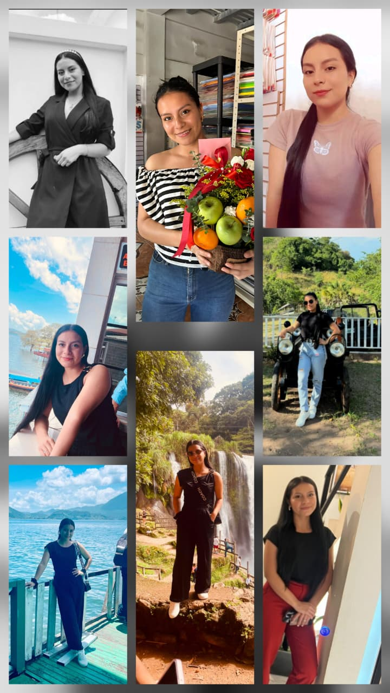

Tengo algo muy especial que preguntarle🙈 pero antes... emprendamos un pequeño viaje por el universo 🙈🌌
¿Quiere ser mi novia?🙈❤️
Ha hecho que mi universo brille mucho más❤️ Gracias por ser la casualidad mas bonita y por ser el suspiro mas sincero lleno de paz❤️❤️❤️
Le confieso que me gustan muchos estilos de música. He escuchado canciones de todo tipo; melodías capaces de erizar la piel y letras que permanecen en la memoria❤️
Pero un día escuché una melodía que nunca antes había oído. Duró apenas unos segundos... Le recuerdo, fue fuera de un café…para ser más exactos, fuera de Café San Rafael🙈…unos pocos segundos que bastaron para convertirse en el sonido más hermoso que mis oídos habían conocido.
Su dulzura resonó en lo más profundo de mí. Fue tan delicada, tan mágica, que por un instante sentí como si el viento susurrara una canción; una serenata bajo la luz de la luna, una obra perfecta que no necesitaba escenario. Una melodía que aún sigue haciéndome cosquillas en el alma y erizando mi piel con su extraña sensación de paz.
Jamás he vuelto a escuchar esa melodía. Y, sin embargo, nunca desapareció. No se la llevó el viento ni el tiempo. Sigue viviendo en mi memoria, escondida entre el sonido de la lluvia, entre las canciones que escucho y en los silencios de mis días. A veces incluso aparece en mis pensamientos, como un eco que se niega a desaparecer.
Aquella voz, tan delicada y al mismo tiempo tan firme, me sorprendió por completo. No era como la había imaginado antes de escucharla. Tenía una mezcla de suavidad y firmeza que consiguió quedarse en mi memoria desde el primer instante.
Entonces comprendí cuál era la melodía que tanto buscaba.❤️❤️❤️
❤️La melodía más hermosa que he escuchado... es, simplemente, su voz❤️